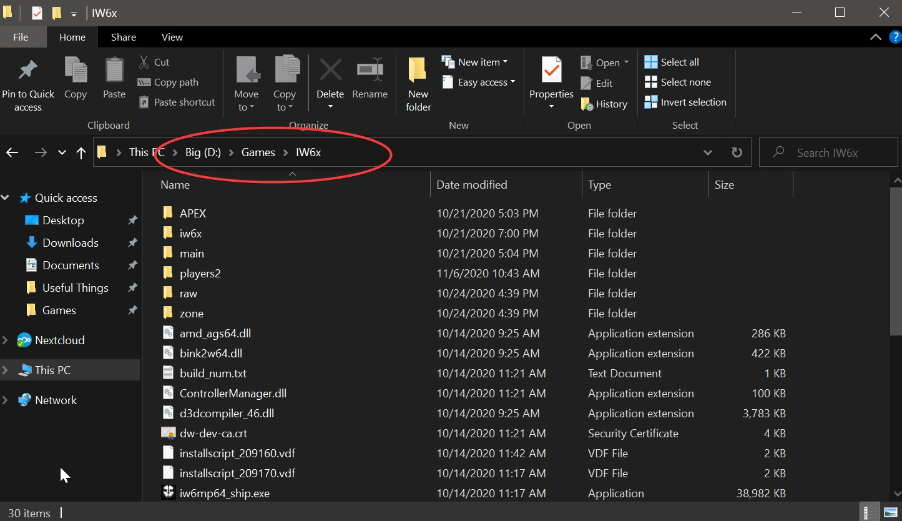
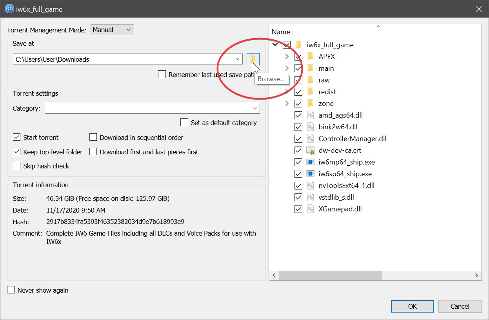
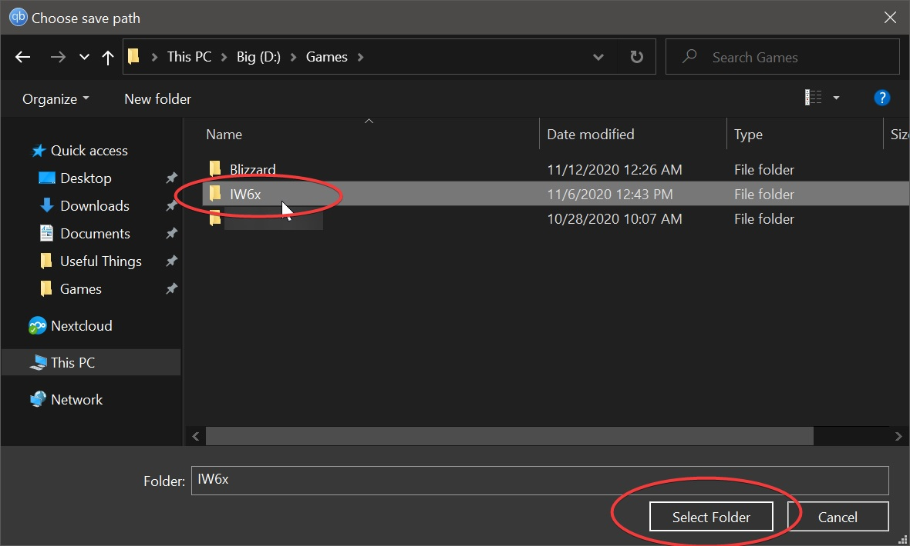
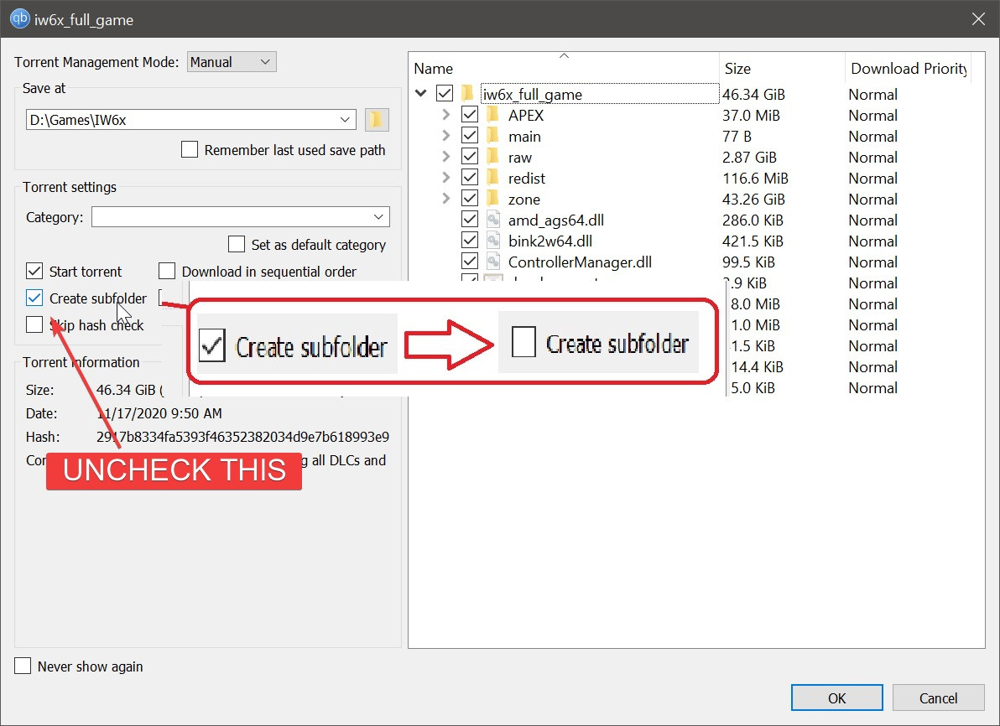
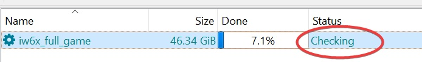

IW6x REPAIR GUIDE
An in-depth guide on to repair a broken IW6x install.
Requirements:
Getting Started:
- Locate your IW6x Install, and make note of the folder name and folder path (Your folder name may differ from the example below). 
- Download the following torrent and open it with qBittorent.
- Once prompted with the following screen click on the icon marked in red: 
- Browse to the location of your IW6x folder and mark it by clicking on it once. Now click "Select Folder": 
- IMPORTANT: Untick "Create Subfolder", after that hit OK to start the repair process: 
- The torrent client will now check your game files and re-download missing or corrupted ones: 
- Once the torrent status changes to Seeding the repair process is complete.